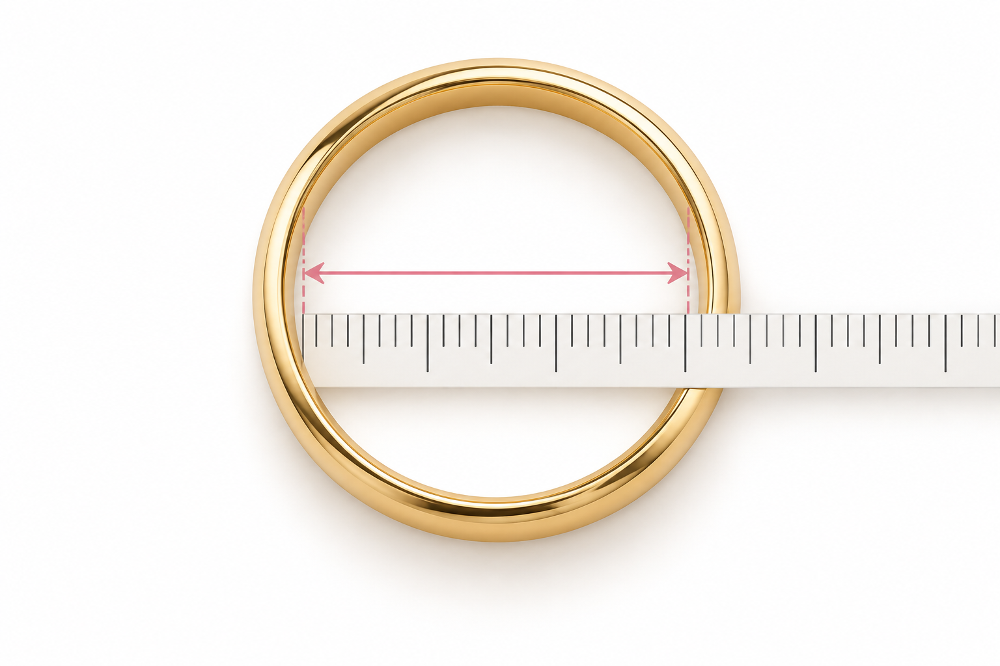

Método 1
Diâmetro interno
Com um anel e uma régua
Meça de uma borda interna à outra, passando pelo centro.
- Escolha um anel confortável para o mesmo dedo em que usará a nova peça.
- Deite o anel sobre uma mesa e coloque a régua no centro da abertura.
- Meça de uma borda interna à outra, passando pelo centro. Não inclua a espessura do metal.
- Anote a medida em milímetros (mm) e procure na coluna "Diâmetro interno".
Exemplo: diâmetro interno de 18,4 mm → aro 18.